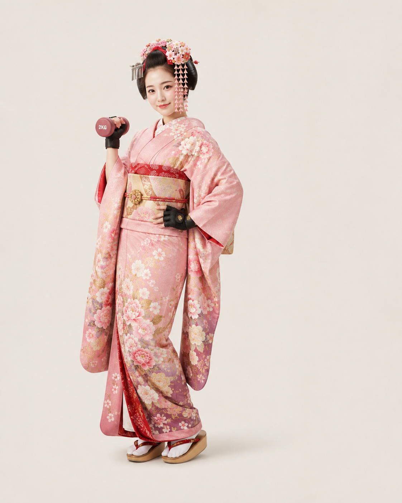

2001
京都に生まれる
幼少期より舞踊を習う。まだダンベルには触れていない。

「筋肉って嘘つかはらへんやん？」
筋乃 小梅（24）
伝統芸能の世界で育った一人の舞妓が、筋力トレーニングに目覚めるまでの経過を追跡しました。
幼少期より舞踊を習う。まだダンベルには触れていない。
厳しい稽古の日々。長時間の正座により、本人も知らぬ間に下半身の基礎が形成される。
華やかな舞台の裏で「もっと体幹が欲しい」と感じ始める。
知人に勧められ、軽い気持ちでジムへ。人生初のスクワットを経験。
「週1で十分」と話していたが、3か月後には週4へ。
甘味処を訪れる前に、無意識にタンパク質量を確認するようになる。
お座敷の合間にフォーム動画を見る姿が確認される。
周囲から「最近ちょっと大きなった？」と言われるも、「帯どす」と回答。
筋肉は裏切らないという独自の結論に到達。
※ 記録は本人申告による。